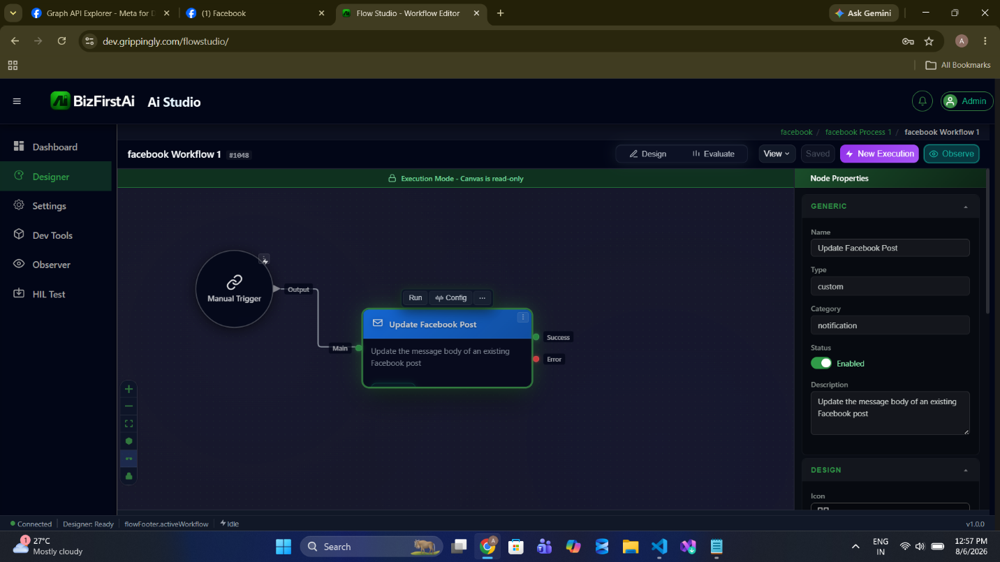
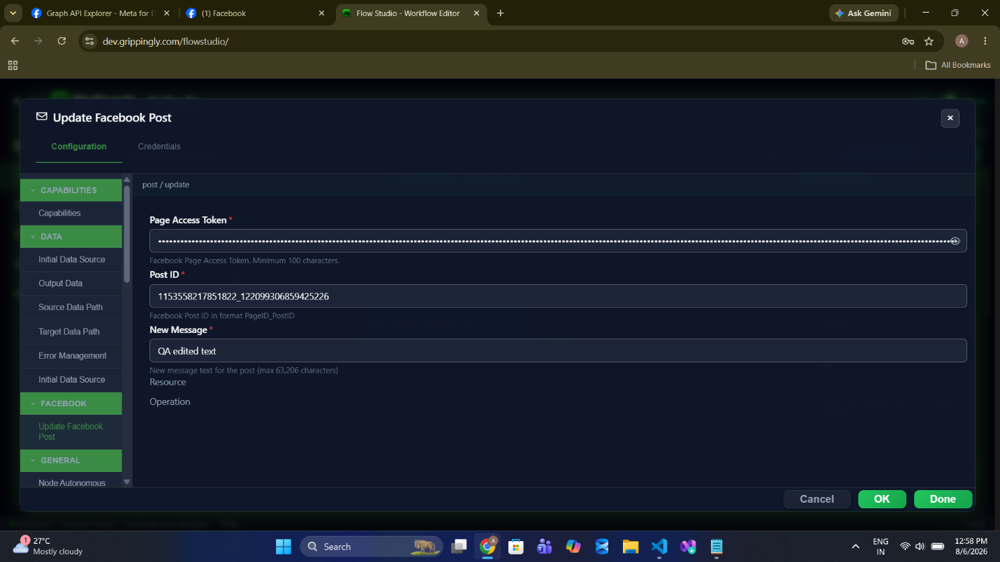
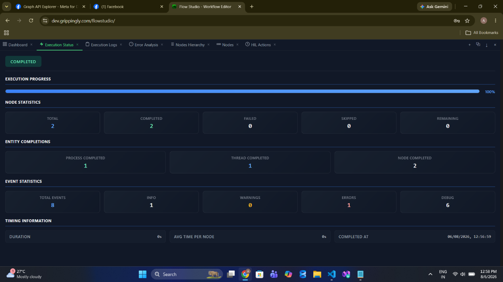
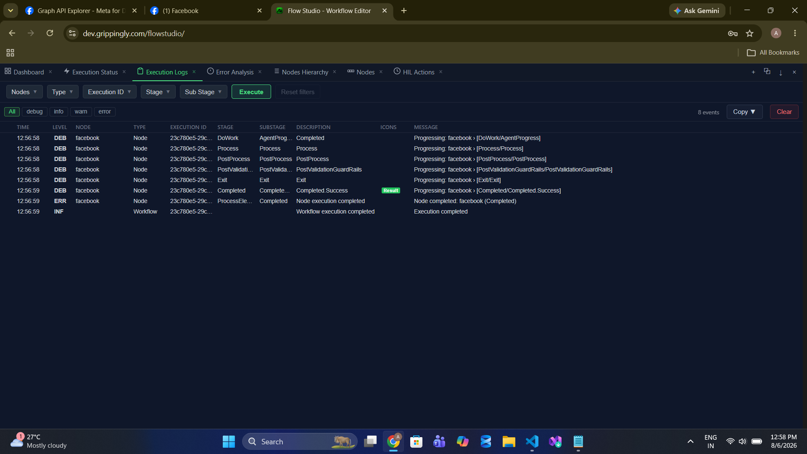
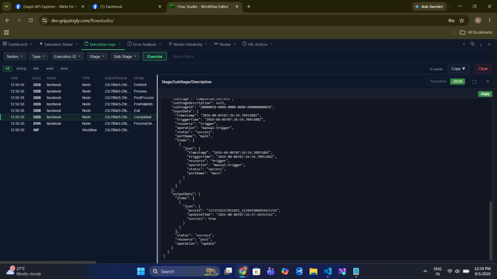
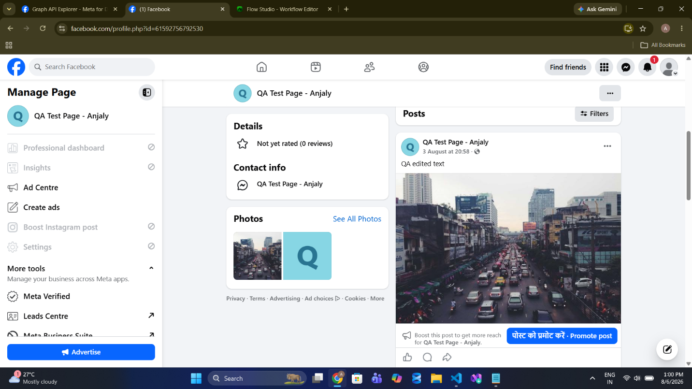

post/update
Replace the message text of a published Facebook post, keeping its reactions, comments, and attachments intact.
Palette name: Update Facebook Post · Graph call:
POST /{postId}?_method=PATCH · Permissions: pages_manage_posts · Field reference: Post Operations
The previous text is not recoverable. This operation replaces the post's message outright and the node does not read the old value first. If you may need to revert, read the post with page/getFeed and store the original text before updating.
When to Use
- Correct a mistake in published copy without losing the post's reactions, comments, and shares — which deleting and re-posting would discard.
- Append a status update. Mark an incident post as resolved, or a promotion as ended, in place.
- Fill in details that arrive late, such as a final price or a confirmed date.
- Localise or re-word after an approval round.
Walkthrough
1Place the node

2Configure

post / update. New Message completely replaces the existing post text — it is not appended.3Run


4Read the output

postId, updatedTime, and a success flag, with resource: "post" and operation: "update".5Verify on the Page

Configuration
| Field | Required | Description |
|---|---|---|
resource | Required | Must be post. |
operation | Required | Must be update. |
pageAccessToken | Required | Page access token, or a stored credential. |
postId | Required | Post ID in {pageId}_{postId} form. |
message | Required | The replacement post text. |
Only the message can change. Link, picture, and caption are fixed once a post is published — Facebook does not allow them to be edited, and this operation does not accept them.
Sample Configuration
{
"resource": "post",
"operation": "update",
"credentialID": 4021,
"postId": "1153558217851822_122099306859425226",
"message": "QA edited text"
}Marking an incident post resolved, reusing the post ID captured when it was published:
{
"resource": "post",
"operation": "update",
"credentialID": 4021,
"postId": "{{ $output.incidentPost.items[0].postId }}",
"message": "RESOLVED - service was restored at {{ $now }}. Thank you for your patience."
}Output
| Field | Type | Description |
|---|---|---|
status | string | "success" |
items[0].postId | string | The post that was updated — echoed from the input. |
items[0].updatedTime | string | ISO-8601 timestamp generated by the node when the call succeeded. |
items[0].success | boolean | Always true on the success port. Carries no extra information — use the port itself to branch. |
{
"status": "success",
"resource": "post",
"operation": "update",
"items": [
{
"postId": "1153558217851822_122099306859425226",
"updatedTime": "2026-08-06T07:26:57.5678350Z",
"success": true
}
]
}Validation
| Message | Cause |
|---|---|
pageAccessToken is required... | No credential and no inline token. |
Access token required | Token is blank. Emitted as FACEBOOK_AUTH_ERROR. |
FACEBOOK_NOT_FOUND | Post ID does not exist, or the token cannot see it. |
The message length is not checked locally on this operation. The properties panel says 63,206 characters, and that is Facebook's real limit — but unlike page/post, this operation sends the text without a local length check. An over-long message is rejected by Facebook, so the failure surfaces as a Graph error rather than a validation error.
Notes and Cautions
- Facebook shows an edit history. Viewers can see that a post was edited and what it previously said. Editing is not a way to quietly retract something.
- Idempotent in effect. Running the same update twice leaves the post in the same state, which makes this safe to retry — unlike publish and comment.
- Very old posts may be uneditable. Facebook restricts editing on some post types and ages; the failure comes back as a Graph error on the error port.
Related
- page/post — publish the post this operation edits
- page/getFeed — read the current text before replacing it
- Troubleshooting — when Graph refuses the edit